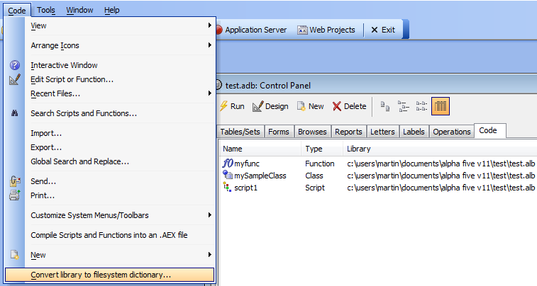
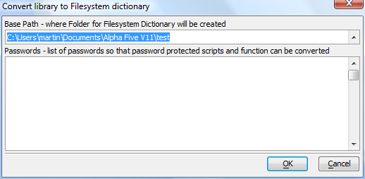
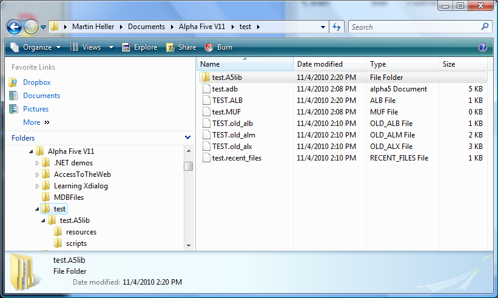
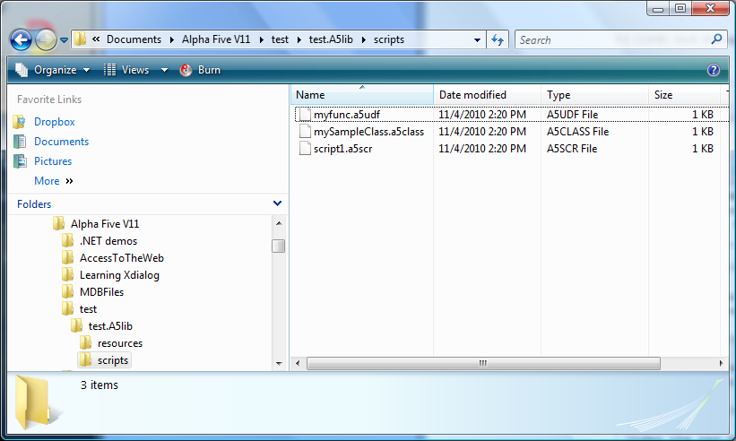
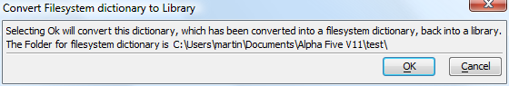

Working with Version Control
In Alpha Five Version 11 we have made it easy to integrate your Alpha Five coding with external version control systems.Most version control systems depend on storing the small differences between successive versions of text files for efficient storage. Most Alpha Five artifacts are normally stored in a binary database or a binary file for efficient loading and saving. This has historically presented an "impedance mismatch" between Alpha Five code and version control systems. To address this, we have introduced the option to keep a project's code in an external file system.
Using an external file system dictionary
To convert a code library to an external file system dictionary, give the focus to the Code tab of the Control Panel and select the Code|Convert Library to filesystem dictionary... menu item.
The next dialog to appear will ask you for the target folder and the passwords of any protected scripts and functions.

Press OK and your current library database will be backed up and a new folder will be created containing your code files.

Under the new directory will be two subdirectories containing your resources and scripts, respectively.

You can now commit your files, which are simple text, to source code control.
When you want to ship or publish an Alpha Five application, you can non-destructively convert your file system dictionary back to a library database.

If your functions are contained in an AEX file, it is not necessary to convert the file system dictionary back to a library database.